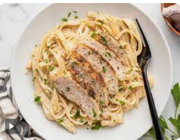
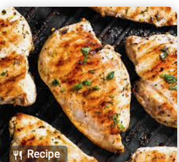
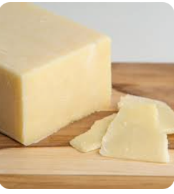
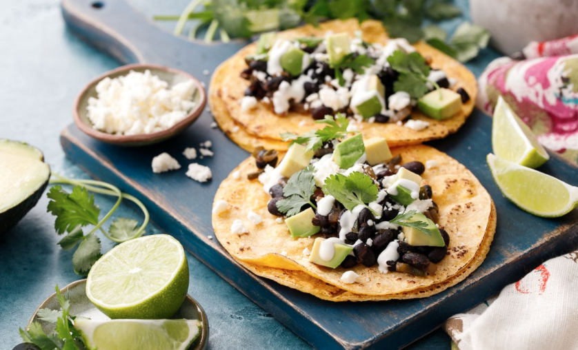

Recipes
skip to mainSpicy Fried Chicken Sandwich Recipe
Origin: American
Source: Original recipe!
Category: Main Dish

Recipe Ingredients
- Chicken Prep:
- 1.5lb chicken thigh
- 2 tbsp garlic powder
- 2 tbsp smoked paprika
- 1 tbsp cumin
- 1 tbsp black pepper
- dash/pinch of salt
- 3 cups of flour
- 3 tbsp oil
- 1 tbsp hot sauce
- Marinade
- 1 cup preferred hot sauce
- 2 eggs
- 1 tsp black pepper
- dash salt
- 4 tbsp melted butter
- Bun/toppings
- 4 hamburger buns
- crinkled pickles
- tomatoes
- lettuce
- Chipotle Mayo
Recipe Steps
- Wash your chicken and leave it to rest in a bowl
- Begin working on your marinade. In a medium/large bowl, combine your hot sauce, eggs, black pepper, butter, and salt one-by-one. Mix until fully dissolved
- In a separate bowl, combine flour, garlic powder, paprika, cumin, black pepper, salt together. Whisk thoroughly.
- Prep your chicken thigh by poking holes with a fork across its surface on both sides. Place your chicken into the marinade mix and let rest for 1-2h. (if speed is needed, can do a quick soak of 10-15min)
- Place your marinated chicken into flour mixture and toss. Place back in marinade and redcoat. Repeat 2-3 times.
- Prepare your vegetables and set them aside.
- Grab a deep pan and add your oil on medium-high heat. Fry in oil for 4-5min on each side.
- Remove chicken thigh and toss in 1tbsp hot sauce before plating.
- Combine the buns, toppings, and chicken and serve!
Additional Food Images


Chicken Alfredo Pasta
Origin: Italy
Source: Grandma's Kitchen
Category: Main Dish
This creamy and delicious pasta dish is a comfort food classic that never disappoints.
Recipe Ingredients
- Chicken breasts
- Fettuccine pasta
- Heavy cream
- Garlic cloves
- Grated Parmesan cheese
- Butter
- Salt and pepper
- Parsley for garnish
Recipe Steps
- Cook the fettuccine pasta according to package instructions.
- Season the chicken breasts and grill them.
- In a pan, sauté garlic in butter.
- Add heavy cream and bring to a simmer.
- Add Parmesan cheese and stir until melted.
- Add the cooked pasta and grilled chicken to the sauce.
- Mix well and garnish with parsley.
Additional Food images
 Vegan Tacos
Origin: Mexico
Source: Vegan Cookbook
Category: Main Dish
These Vegan Tacos are made with a mixture of vegetables and spices. They're a guilt-free and delicious way to enjoy Mexican cuisine.
Recipe Ingredients
- Corn tortillas
- Black beans
- Tomatoes
- Avocado
- Red onion
- Garlic
- Lime
- Cilantro
- Cumin
- Salt and pepper
Recipe Steps
- In a pan, sauté red onion and garlic.
- Add black beans and cumin.
- Mash the mixture lightly.
- Add lime juice and chopped cilantro.
- In another pan, heat the corn tortillas.
- Assemble the tacos with the bean mixture, chopped tomatoes, and avocado slices.